Goal 1: Navigate Family Tree Vault
Navigating in FamilySearch Family Tree is essential so you can find ancestors, interpret their information, and add records, data, and memories to their entries.
Note: You can view FamilySearch screens and The Family History Guide in side-by-side browser windows, instead of constantly switching between browser tabs. For instructions, click here.
Choices
A Log in to FamilySearch and move around the Family Tree screen.
Note: If you do not have a free FamilySearch account, read this article  for instructions. LANG:
DE FR IT PT JA
for instructions. LANG:
DE FR IT PT JA
- Go to www.familysearch.org and click Sign In near the upper-right corner of the window. 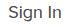
- Type your username and password and click Sign In. If you have forgotten your username or password, click the username or password link for help. For help with recovering an LDS account or password, read this article.

- 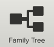Click the Family Tree icon (middle of the page) to display your family tree. Landscape View is selected as the view type in the second menu bar. You will see "couple's boxes" - husbands and wives - with your ancestors' information.
- Click and drag the mouse pointer anywhere on the Family Tree screen to move your family tree around.
Note : If your family tree is empty or nearly empty, skip ahead to Choice F to begin filling it out.
B Change the zoom level on the screen to see a larger or smaller view.
- Click the plus icon to enlarge the view, or the minus icon to shrink the view.
C Expand and contract family lines to see more or fewer ancestors.
- Click an Expand button to view previous generations in the pedigree.
- Click the same Expand button again to contract and return to the previous view.
D Navigate back to see earlier ancestors, if they have been entered in your Family Tree.
-
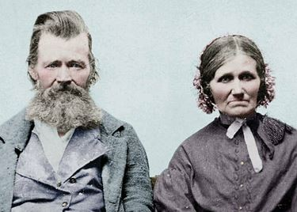
- Navigate back to an ancestor who was born several generations ago. Go farther back if you like.
- Notice the ancestor surnames and birth locations (cities and states) as you go.
- Practice navigating around your tree, opening and closing branches until you feel comfortable exploring your family lines. Note that when you expand a line, a nearby line may close in order to provide more viewing room. 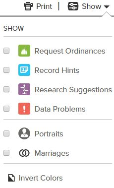
- If you want to show less information (and have room for more couples on the screen), click Show at the right edge of the second menu bar. Then clear the checkboxes for Portraits and Marriages. You can also clear checkboxes for Request Ordinances (if enabled in Settings), Record Hints, Research Suggestions, and Data Problems.
- To change the color scheme of the couple's boxes from black-on-white to white-in-black, click Show and select Invert Colors. To return to the original colors, click Invert Colors again.
- For a video review of navigation techniques, watch the FS Landscape Navigation video
 . This video also covers concepts in Goals 2. Or read the article for a diagram view of Landscape elements.
. This video also covers concepts in Goals 2. Or read the article for a diagram view of Landscape elements. - This article is also a good review of Landscape features. LANG:
DE ES FR PT
- For more help on navigating Family Tree and other topics, click Get Help (upper-right corner) or the Tips icon (lower-right corner). To learn more, read these articles. | LANG:
DE ES FR PT | LANG:
DE PT
E Understand the privacy rules for FamilySearch that determine how information for living persons is handled.
Generally, data for living people outside your immediate family cannot be viewed or searched for.
- Read these documents | to learn about the FamilySearch privacy policy and how it affects what you can see in your tree. LANG:
DE ES FR IT PT JA | DE ES FR PT JA

F If your family tree is empty or very small, begin to fill it out.
- Watch this video to learn how to link living individuals to deceased ancestors.
- Read this article about starting with a blank family tree. It also explains how to use Quick Start if your tree contains fewer than 4 generations. LANG:
DE ES FR IT PT JA
- Go to the FamilySearch First Run page to get help adding ancestors, starting with your parents. Click Next until you finish the First Run process. You can also click to get help with experts.
- Return to Choice A above to work on navigation skills.
Goal 2: View details about direct-line ancestors.
Once you locate ancestors in Family Tree, you can read a variety of important details about them.
Choices
A Open a Summary card for a person other than yourself.
-
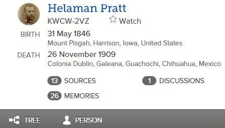
- Choose a person's name on the screen and click on it.
- To learn more about your ancestor, read each of the information items in the Summary card that appears.
- For help with Summary card information, read the first page of the document.
B Open the Person page for an ancestor.
- Click "Person" at the bottom of the Summary card.
- On the Person page that appears, study each information category (Life Sketch, Vital Information, Other Information, etc.) to learn what types of information are included. You can use the links in the Details tab to quickly access the categories.
- For more information on Person Page details, read page 4 of the article.
- To see how you are related to this person, click View My Relationship near the top of the Person page. A line diagram appears, linking you to this ancestor.
C Place an ancestor as the first person in the Pedigree view.
Switching to a first-position view shows more generations for that ancestor in the view.
- Click View Tree at the top of the Person page (just above the Details tab).
- Notice that children are displayed to the left in the Tree. You can click any of their names to open a Summary card.
- An alternate way to set an ancestor to first position is to click Tree at the bottom the person's Summary card.
- To see a list of the ancestors you have most recently moved to first position, go to Tree in the top menu bar and click the down arrow to the right of it.
DUse the Person menu to quickly choose a person for first-position view.
This helps you restore the first-person view view back to you, or to any other recently viewed person.
- To place yourself in first position, click the down arrow next to the Person menu and select your name in the drop-down menu.
- To select another person for first position, click another name in the Person drop-down menu. Up to 50 names are displayed in the menu.
- To remove a person from this drop-down list (which does not remove them from the tree), hover over the name and click the X that appears.

E Produce a four-generation pedigree chart for the person in first position.
This shows direct-line ancestors and their vital information.
- Click the printer icon (upper-right corner). This creates a pedigree chart as a PDF document in a separate tab.
- Save the PDF document or close it.
- To create a pedigree with portraits displayed, a) Open the Person page for the ancestor; b) Scroll down to the Print box (right side) and click Portrait with Pedigree. A vertical pedigree is created with portraits, including the ancestor's children and their spouses. You can click a portrait in the chart to open the Person page for that ancestor.
F Produce a family group sheet for the person in first position.
This shows vital information for the ancestor, spouse, and children.
- Open the Person page for the ancestor.
- Scroll down to the Print box (right side) and click Family, or Family with Sources.
- Save the PDF document or close it.
- For more information on printing family group sheets, read the article. If you need to print group sheets with sources, see Goal 8, Choice G. LANG:
DE ES FR PT JA
Goal 3: View the children and other spouses of ancestors.
This helps you see family members at a glance in Family Tree.
Choices
A View the children for a selected couple.
-
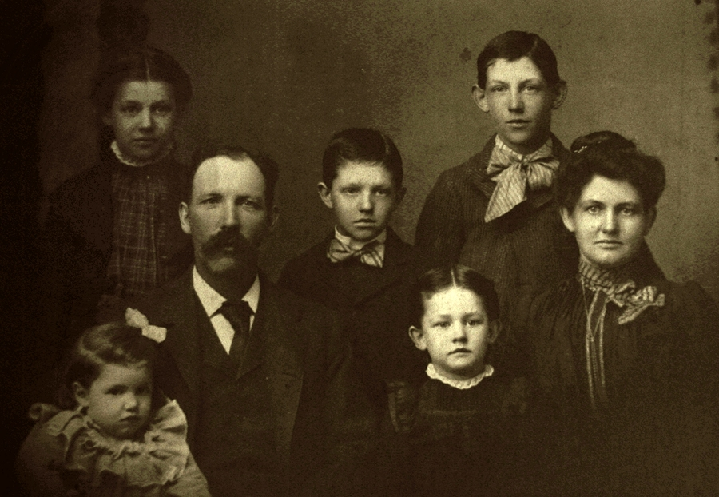
- In Landscape view, click the Children link at the bottom of a couple's box.
- Click one of the child names to display a Summary card for that person. You can also click Person in the Summary card to display that child's Person page.
Note: When you are viewing children to the left of a first-position ancestor, a left arrow appears for any new generations that can be displayed. Click the arrow to see the new-generation children.
B Explore the Family Members section of the Person page.
The Family Members section of the Person page for an individual lists his or her spouse(s) and children on the left side of the page, and the previous generation (parents and the individual's siblings on the right side.
-
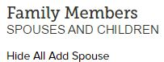
- Click any name to display the Summary card for that person.
- If the individual has multiple spouses, scroll down to see the information for those families. You can select Preferred Spouse to have that spouse appear as the default spouse in the family tree.
- To hide the Children view for all spouses of this individual, click Hide All (just above the first couple listed). To show them again, click Show All.
C View other spouses, if any, for a selected husband or wife.
-
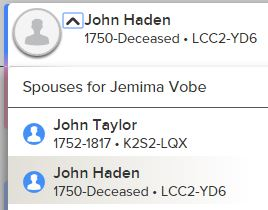
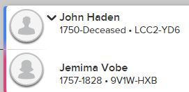
- Find a down arrow that appears next to a husband or wife in a couple's box. (You may need to expand your tree until you see such a link.)
- Click the down arrow and select a different spouse in the drop-down list to display that person's Summary Card.
Goal 4: Use the Find menu or Go To feature to locate ancestors in your family tree.
The Find and Person menus can greatly speed up searches for known ancestors in your tree, instead of scrolling through Family Tree views.
Choices
A Search for known ancestors in your family tree, using the Find menu.
Note : This technique finds ancestors already in your Family Tree. Searching for new ancestors to add to your family tree is explained in Project 4: Discover.
- If you know the ID number for a person, click the Find menu and enter the data in the Find by ID tab. This will place the person with that ID number in first position.
- If you don't know the ID number, a) Click the Find menu and switch to the Find by Name tab; b) Type the name of an ancestor in your tree to search for, as well as a birth date; and c) Press Enter to return the name, as well as other names that FamilySearch determines might be a match.
- For help with using ID numbers in Family Tree searches, read the article or watch the video. LANG:
DE ES
- Watch this video for tips on using the Find menu to locate ancestors already in your tree.
Note : Using the Find by Name tab is essential for Goal 7, which deals with adding ancestors.
B Do a "limited" search to refine the results.
- Click the Find by Name tab and then select the "Match All Exactly" checkbox for each item that needs to be exactly matched.
Note : You should use exact matches only when you are reasonably sure that the data in all your search fields is correct. Otherwise, you will exclude records that should be included in the search.
C Quickly find recently viewed people using the Go To feature.
- Click the down arrow next to Tree or Person in the menu bar. A list of up to 50 recently viewed individuals appears.
- Select a person from the list, or type a person's ID in the Go To box and click the arrow.
- To remove a person from the list, hover the pointer over the name and click the X that appears.
- For more information on using the Go To feature, read the article.
Goal 5: Use alternate views (Portrait, Fan, Descendancy, Virtual Pedigree) to see your ancestors.
The Portrait view shows photos for your ancestors. The Fan Chart view shows more ancestors on a screen, in a semi-circle view, which helps you identify missing ancestors quickly. The Descendancy view helps you do research on descendants of a given ancestor.
Choices
AUse Portrait view to see available photos of your direct-line ancestors.
-
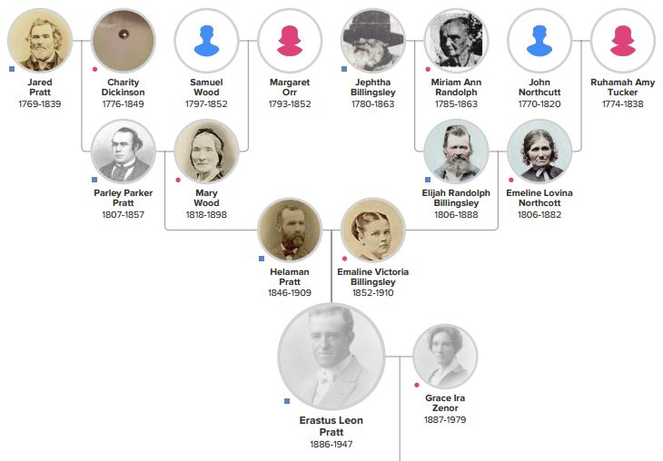
- Click the Portrait icon in the lower menu bar. Portrait view shows up to three generations past the current ancestor, plus the current ancestor's children. Record hints and other icons are available in this view.
- Review the photos of your ancestors that appear in the view, noticing those you have not seen before.
- Click an up-arrow at the top of the view to go back a generation, or a down-arrow at the bottom of the view to go forward a generation. Note: You can use the Show menu, as explained in Goal 1, Choice D above, to select the types of information that appear. Also, you can click the plus or minus icon to zoom the view, or drag the mouse or use the scroll bars to change the view position.
- For help with using the Portrait view, watch the video.
B Display and print a Fan Chart.
-
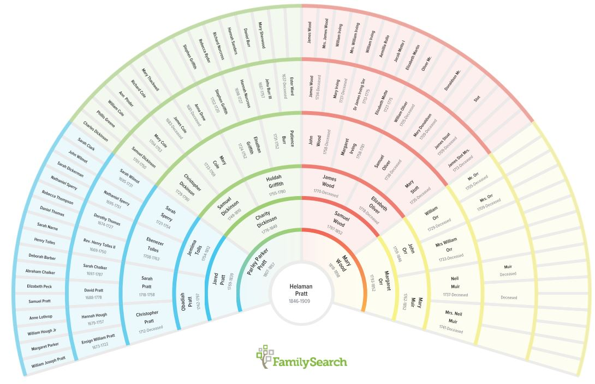
- In Family Tree, change to Fan Chart view by clicking the the Fan icon on the lower menu bar. The fan chart shows four generations before the ancestor, as well as the ancestor's children.
- Click a person's name to display their Summary card; then close the card.
- In the Fan Chart, click the "fan" icon next to a name to move that person to first position in the chart.
- Click the printer icon to print a seven-generation Fan Chart for that person (children are not shown for the starting person). For help with printing fan charts, watch the video.
- For a first-position person, click a child's name to show the Summary card. If there are more than seven children for a couple, click the left or right arrow to scroll the children list.
- For help with displaying and navigating with fan charts, see these resources. |
LANG:
FR
Note: You can use the Show menu, as explained in Goal 1, Choice D above, to select the types of information that appear. Zoom is not available, but you may be able to use scroll bars to change the view position.
C Use Descendancy view to see descendant lines of the ancestor you select.
- Click the Descendancy icon. Record Hints and other icons are available in this view.
- Click Expand in the upper-left corner.
- Select an ancestor. If possible, choose one who was born over 100 years ago, so there will be more descendants to view.
- Set the Generations to 2 or 3, instead of 1.
- Use the Expand buttons to collapse or expand lines in the view.
- Scroll down to see descendants and their spouses.
- Click the Show link in the upper-right corner. The box describes the colored icons that appear to the right of some ancestor names.
- Un-check one or more options to change the Descendancy view.
- For more information on using Descendancy view, watch the video.


D Use Virtual Pedigree to see a wider view of your family tree in pedigree form.
The Virtual Pedigree program expands the viewing width of your family tree as you scroll over it, so you don't have to stop at each branch and reset the view. The Virtual Pedigree program also supplies hints for missing information.
-
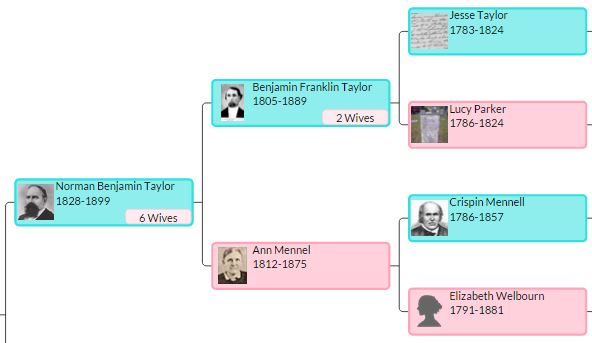
- Access Virtual Pedigree.
- Click the Sign In with FamilySearch button.
- Sign in to Family Search and then click Accept.
- Scroll to the right to see your pedigree information expand.
- Find ancestors with icons who need more information.
- Click an ancestor name to see details and to open that Person page in FamilySearch.
- To set a different person as root, enter the Person ID in the upper-left box.
Goal 6: Change information for ancestors in your tree. Vault
Making corrections helps you and others see the most complete and accurate information in Family Tree.
Note: Go back only a few generations from yourself at first, unless you already have extensive information in your possession to check against Family Tree. You can return to this goal when you have done research for ancestors (Project 4).
Choices
A Update the Vital Information or Other Information for a person.
Note: Whenever possible, use the standard format for dates and places. As you type, a list will appear so you can select the standard format. See this article for details.
LANG: DE ES FR IT PT-
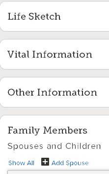
- In Family Tree, open the Person page for the person who needs updating.
- To change Vital information, click the link for the existing information, cllick Edit, make the changes, and save them.
- To change Other information, a) Click the Open Details link; b) Click Edit for the piece of information you want to change; c) Fill in the fields; and d) Click Save.
- To add Other information (Custom Event), a) Click Add; b) Select the information type from the list; c) Fill in the Custom Event fields; and d) Click Save.
- For more about updating Vital and Other information, read page 5 of the first article and all of the second article. LANG:
DE ES FR IT PT JA
B Provide reason statements for the changes you make in the family tree.
-
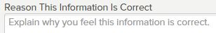
- Read this document for the steps to follow.
- For ideas on how to write effective reason statements, see this FamilySearch blog article.
C Update the Marriage information for a couple.
To add a spouse,
-
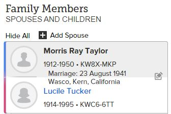
- In Family Tree, open the Person page for an existing ancestor.
- Click Add Spouse.
- Fill in as much information as you can.
- Click OK.

To update the marriage information for a couple,
- Open the Person page for either spouse.
- Scroll down to the Family Members / Spouses and Children area and click the Edit Couple (pencil) icon.
- Click any information link you want to update, and then click Edit.
- Update the information in the field, type a Reason statement, and click Save.
D Correct relationship errors or change relationships in your family tree.
These can include an unknown spouse in a couple's box, children assigned to the wrong parent, etc.
- Refer to this document for the steps to follow in correcting relationship errors. LANG:
PT JA
- Read this article for information on adding or changing relationship types in your tree. These include step-children, adoptions, etc. LANG:
PT
- To fix a looping pedigree (an older generation linked to a newer one, left to right) in Family Tree, use the tips in this article.

E See changes that others have made to a person's record.
-
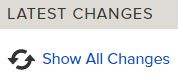
- Open the Person page for an ancestor.
- Scroll down to Latest Changes in the right-hand pane.
- Click Show All if you want to see all available changes for this person.
- For more information on changes to person information, read this article. LANG:
DE ES FR IT PT JA
F Use the FamilySearch Watch List to be notified when others make changes to data for an ancestor.
- Open the Person page for the ancestor you want to track.
- Click Watch (next to Tree near the top of the page). You will be sent an email when a change is made to data for an ancestor on your Watch list.
- Click Unwatch (next to Tree near the top of the page) to stop watching the ancestor.
- For more details on using the Watch List, refer to this article. LANG:
ES FR PT
G Correct data problems that may occur in your family tree information.
- To have FamilySearch display a red icon next to each data problem it finds in your tree, make sure that Data Problems is checked in the Show link.
- For details on common types of data problems and tips on correcting them, read the article.
- You can also use the Find-A-Record web site to find data problems and correct them in your tree. See Goal 9 for details. LANG: DE ES FR PT

Goal 7: Add ancestors you know about to your tree.
As you fill in the gaps in your family tree, you develop a sense of connection with your ancestors and your heritage. Note: If you don't have any ancestors to add at this time, skip to Goal 8 below.
Choices
AAdd a missing ancestor to your tree, using Add Husband or Add Wife in Landscape view.
Note : Be sure you are confident of that person's vital data (name, birth or death, marriage, etc.).
- In Family Tree, click Add Husband or Add Wife in a Couple's box.
- If you know the new ancestor's ID - such as if you discovered the person elsewhere in FamilySearch, or someone gave you the ID number - then follow steps 3-6 below.
- Click Find by ID Number in the lower-right corner;
- Type the ID number;
- Click Find;
- Click Add Couple ID if you find a couple match, or Add Match if only one person is a good match.
If the matches are not correct, then a) click Back to retype the ID number (if incorrect), or b) click Cancel. (If you need to enter characters in a non-English language, click the Template: Standard link for options.)
If you do not know the new ancestor's ID, then
- Fill in as many fields as you can in the Add Parents dialog;
- Select Living or Deceased;
- If desired, click Additional Find options and fill in more search fields;
- Click Next;
- Click Add Couple or Add Match if you see a correct match; or
- If the matches are not correct, click Refine Search to try a different search, or
- Click "Create New" at the top of the list to add the new person you entered in the Search as a member of the tree.
BAdd a missing spouse (or parent) for whom you have accurate information.
- Open the Person page for the individual.
- In the Family Members section of the page, click Add Spouse on the left side, or Add Parent on the right side.
- If you know the person's ID number, click Find by ID Number, fill in the number, click Find, and then click Add Person.
- If you don't know the ID number, search for the person by following these steps:
- Select the gender, Living or Deceased, and either first or last name, at a miminum. Fill in any other fields you know.
- To include more information, click Additional Find Options and fill in what you know.
- Click Next.
- Review the Possible Matches list (if available). If the correct match is found, click Add Person to add that person.
- If the correct match is not found, click Refine Search if you want to search again, or click Add New to add a person with the name and information you specified.
- Refer to the article for details about using the Find feature for adding ancestors. LANG:
ES
- For more information about adding ancestors to your tree, read the article.
C Add a missing child for whom you have accurate information.
-
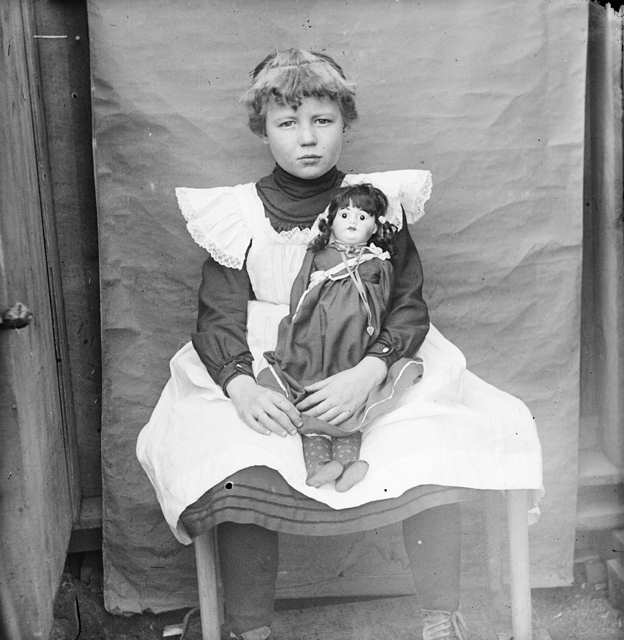
- In Family Tree, open the Person page for an existing spouse.
- In the Family Members section of the Person page, Click Add Child.
- If you know the child's ID number, click Find by ID Number, fill in the number, click Find, and then click Add Person.
- If you don't know the ID number, search for the child by following steps 5-10:
- Select the gender, Living or Deceased, and either first or last name, at a miminum. Fill in any other fields you know.
- To include more information, click Additional Find Options and fill in what you know.
- Click Next.
- Review the Possible Matches list (if available). If the correct match is found, click Add Person to add that person.
- If the correct match is not found, click Refine Search if you want to search again, or click Add New to add a person with the name and information you specified.
- If you need to change the child's relationship from "biological" to another ("adopted," "step," etc.), follow the steps in this article. LANG:
DE ES FR PT
D Migrate information from other databases to your FamilySearch tree.
If you have family tree information in other databases or websites, such as Ancestry, RootsMagic, etc., you may be able to automatically copy that information into FamilySearch Family Tree without having to do manual data entry.
- Watch this video for tips on moving information from Ancestry to FamilySearch.
Goal 8: Add sources for your ancestor records in your family tree. Vault
When you add sources to an ancestor's entry, you help others see the evidence for the dates or other information that exist there.
Choices
ALearn about sourcing and why it's important.
- Read these articles to learn about the importance of adding sources for your family history work. | LANG:
DE ES FR IT PT JA
- Learn how to determine accuracy of information in records. |
- Understand the Genealogical Standard of Proof for sources.
- Ensure that your research meets the Genealogical Standard of Proof.
- Learn how to apply the Genealogical Standard of Proof to sources you are evaluating.
B Use the Landscape view to find ancestors who need sources listed for their information.
-
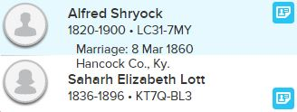
- Look for ancestors with a light-blue icon in the couple's box - this means that record sources are available. If you don't see any of these icons, expand one or more ancestor lines to find them. A purple icon means there are research hints available for the person.
- Click the light-blue icon for an ancestor who needs a source attached. (You can also find source hints in the Hinting area of the ancestor's Person Page.)
- Click Show Details at the bottom of the Record Hints dialog. This displays a window with record hints and research suggestions (if any) for the ancestor. Choice C below explains how to review and attach the record in your family tree.
- For more on using the Record Hints in FamilySearch, read this article. LANG:
DE ES FR PT
C In Landscape view, review and attach a source to your ancestor's Person page.
- Click a blue record hints icon (see Choice B above) and then click Show Details.
- Click Review and Attach to proceed, or Not a Match to return to the family tree screen.
- If you want to view the image for the source record, click the View:Image Record link (upper-left) and then click the Image link if available (bottom).
- In this screen, click Open in a Separate Browser Tab. In the new tab, you can print or download the image. Then return to the Source Linker screen you were on previously.
- If the information does not match your ancestor, click Not a Match and return to your family tree. Or, if you decide not to attach the record at this time, click Return to Family Tree (bottom of screen).
- Type a reason for attaching the source, and then click Attach. The source record is automatically by FamilySearch.
- Click Return to Family Tree. In the ancestor's Person page, notice that the Record Hint no longer appears in the Hinting area (upper right); instead, it appears as a Source at the bottom of the page.
- Read these articles | for a review of adding and attaching sources. For a detailed look at the record hinting process, read this blog post. LANG:
DE ES FR PT
- If you would like to attach websites as sources for records in your tree, read this article about using Tree Connect from RecordSeek.
D Tag events to the sources you have found, or edit or detach sources.
- Follow the steps on page 3 of the document, or the steps shown in the video, to tag events for your ancestor.
- For more information on editing or detaching sources, read these articles. |
E Print sources on a Family Group sheet.
- On a Person page, go to the Print area on the right and click Family with Sources. Now the sources you attached will appear in the family group sheet next to corresponding ancestors.
- To see a sample Family Group Sheet with sources, click the picture at the right. The sources are at the end of the document.
F When light-blue icons or Hinting are not available, use the Sources feature in the Person page to find and attach sources.
These are sources that you have come across in doing research.
- Learn about record sources and how to use them to document information for your ancestors.
- Learn how to attach documents to a source from a Person page. |

G Explore additional topics in sourcing for your family tree.
- Watch any of the following videos if you'd like to learn more about other aspects of sourcing.
- a) Rules and Guidelines for Sources
- b) Creating Your Own Sources
- c) Attaching Sources from the Source Box
- d) Source Box vs. Directly Attaching
- e) Detaching Sources from the Source Box
- f) Ordering Sources
- g) Source Box and Folders
- h) Sources about Relationships
- For ideas on keeping track of your genealogical sources, watch this video.
- To see lists of current and missing sources for your ancestors, refer to Goal 9, Choice B in this project.
Goal 9: Use Find-A-Record to add sources and update information for ancestors.
FindaRecord.com helps you determine which of your ancestors have opportunities for sources, corrections, and other updates in your tree. This site pulls information from your FamilySearch tree and shows ancestors who need data updates.
Choices
A Get started with Find-a-Record.
- Go to FindaRecord.com.
- When prompted about allowing FindaRecord to use your FamilySearch information, click Accept.
- Log in to FamilySearch when prompted.
B Set your choices for people and record issues to display.
- In the Find-A-Record screen, choose values in the drop-down menus for "Who do you want to find?" (default is Cousins).
- Choose a value for "How many generations?" (default is 5, or 100 years).
- If you want to eliminate some entries in the Opportunities list at the right, click a category in "What do you want to do?" and clear checkboxes as needed.
- Click Details for any opportunity you want to investigate. Tip: Keep your FamilySearch browser window open so you can can make updates to your tree and switch back to Find-A-Record for Opportunities.
Find-a-Record will scan your family tree and return Opportunities. The scan time depends on the size of your tree and the number of generations selected. If these are large, the scan may take 10 minutes or more.
Note : Opportunities for missing father, mother, and parents are discussed in Project 4: Discover, Goal 2, Choice D.
C Work through the Opportunities list and make needed updates in your tree.
- In the Find-A-Record screen, choose values in the drop-down menus for "Who do you want to find?" (default is Cousins).
- Choose a value for "How many generations?" (default is 5, or 100 years).
- Scroll through the Opportunities list that appears and make note of the ones you want to investigate. (You can click Fixed or Hide to remove an Opportunity from the list.)
- Open your family tree in FamilySearch and make needed changes to ancestor information.
Goal 10: Add notes about ancestor entries, or join discussions about ancestors.
Adding notes and documentation to ancestor entries helps you a) solidify your ancestor's information; b) track issues and questions; and c) communicate with other FamilySearch users about common issues.
Choices
A Add a helpful note about an ancestor.
-
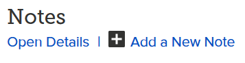
- In Family Tree, open the Person page for the ancestor.
- Below the Detail tab, click Notes (at the right) or scroll to the bottom of the page.
- Click Add a New Note.
- Write a title and text for the note. Make sure there is enough information to be clear to others who read the note.
- Click Save.
B Learn about current Family Tree user discussions regarding your ancestors.
Note: User discussions are usually posted to bring attention to record discrepancies, duplicate ancestors, or other problems with records.- In your family tree, click a name to open the Summary card.
- Keep opening Summary cards until you find an ancestor with at least one discussion noted on the card.
- Click Discussions.
- In the Discussion area on the Person page, click one of the Discussion links.
- Click the Comments link at the bottom (if any).
C Join or create a discussion regarding an ancestor.
-
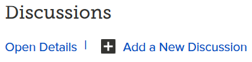
- In an open Discussion box, click Comment.
- At the bottom of the box, type your comment and click Save.
- In a Discussion box, click Add a New Discussion.
- For tips on participating in discussions, read this article.
- In an open Discussion box, click Add a New Discussion.
- Write a title and description for your discussion and click Save.
To create a discussion about an ancestor,
D Use the FamilySearch messaging feature to contact a person for information.
-
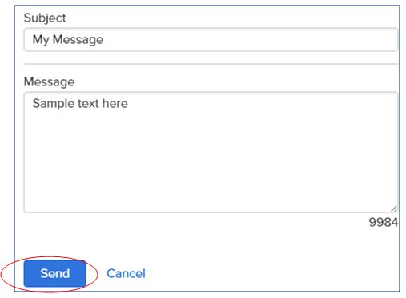
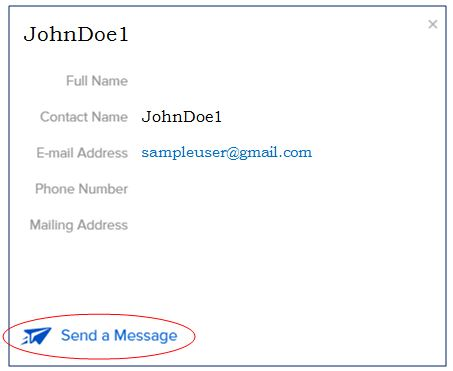
- Read this blog article about the FamilySearch Messaging feature. You can use it to send a message to someone who has updated a Person page (if that person has an available contact e-mail address in FamilySearch).
- In a Person page, click any contributor email link next to an information section (or click Show All Changes for a list). The Messaging window opens.
- Click Send a Message at the bottom of the window to display the Message Text window.
- Type a message (up to 10,000 characters) and click Send. Your message will be delivered as a FamilySearch e-mail.
- Track conversations in the Messages link at the top of the Family Tree screen.
- To contact the person via regular e-mail instead of the messaging feature, click the person's e-mail address in the Messaging window.
- To check for incoming messages, click the Messages link in the upper-right corner of the FamilySearch home screen. You can click an individual message to read it in the main window or click Show All to display all messages you have received. In the main window you can also highlight a message and click the Delete link to remove it. Your replies to messages appear in the main window.
- To respond to a message, a) highlight the message in the list; b) type your message in the "Write a message" box; and c) click Send.
E Track and resolve conflicting information in genealogy lines.
- Use discrepancy charts to track the differences in varying versions of an ancestor's line.
- Learn more about how to resolve conflicting evidence. |
- Explore Lesson 17 on the Evidence Explained website by Elizabeth Shown Mills.

Goal 11: Merge duplicate ancestors in your tree.
Duplicate entries for ancestors have been added over time to Family Tree. To eliminate the duplicates, you can merge two similar entries for an ancestor, keeping the information in just one entry.
Choices
A Search for possible duplicate entries in your tree.
- Read the article (pages 5-6) or watch the video to get an overview of how duplicate entries are found.
- Open the Person page for an ancestor who you think may have duplicate entries in Family Tree.
- Click the Possible Duplicates link in the Tools box on the page.
- In the Matching People dialog, make note of the ID numbers for each person that has identical or very similar information.

B Use Find-A-Record to identify possible duplicates in your tree.
- Go to the Find-A-Record site.
- Clear all the checkboxes except "Problems". Find-A-Record will return a list of possible duplicates as well as other potential problems in the tree.
C Merge two duplicate entries in your family tree.
- Read these articles to learn how the merge process works. |
- Learn how to merge individuals by their FamilySearch IDs in this article.
- If you need to undo a merge that has been done, follow the steps in this article. LANG:
DE ES FR PT JA
Note: Merging duplicate entries can be a complicated process. Additional, detailed steps for merging duplicates are outlined in Chapter 9: Merging Duplicate Records in the Family Tree Reference Manual.
Goal 12 (optional): Produce customized ancestry charts.
Using customized or expanded pedigree and fan charts helps you see more of your ancestry or use different approaches.
Choices
A Use TreeSeek.com and other resources to produce expanded pedigree and fan charts from your FamilySearch data.
- Access www.treeseek.com.
- Click the Log In Now button.
- Sign in to Family Search and then click Accept.
- Select the starting person for the chart, by name or Person ID.
- Select the type of pedigree or fan chart you want.
- Click Create Chart and wait until the chart is completed.
- Click Download Chart if you want to save a copy.
- For more information on using TreeSeek to produce pedigree and fan charts, read this article.
B Use blank, printable ancestry charts for individual or family projects.
-
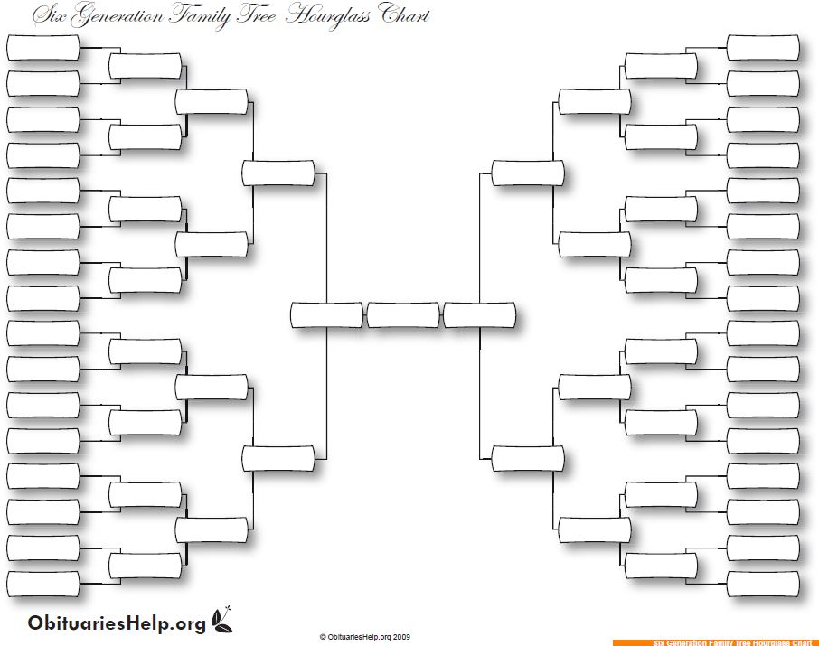
- Download a variety of free printable templates from ObituariesHelp.org. These include charts that are also useful for younger children.
- Download free blank charts from About.com.
- Download free blank forms and charts from Ancestry.
C Use TreeSeek.com to produce a Source Tracker chart for ancestors.
- In TreeSeek, select the starting person for the chart, by name or Person ID.
- Select the Source Tracker chart.
- Click Create Chart and wait until the chart is completed.
- In the Census tab (default), click any checkmark to see the corresponding FamilySearch census source for the person, or magnifying glass to search for a FamilySearch source record for the person.
- Click the Vital Events tab click and see or search for source records.
Goal 13 (optional): Change your account settings in FamilySearch.
You may need to change various account settings from time to time, such as your password and preferences.
Choices
A Edit your FamilySearch settings.
- Click your name in the upper-right corner of the FamilySearch screen.
- Select Settings.
- If desired, change your password in the Account menu.
- If desired, change information in the Contact menu. The e-mail address listed here is the one that other FamilySearch users will use to contact you, if the Public box is checked.
- If desired, change settings in the Notifications menu.
- If desired, change settings in the Preferences menu.
- If desired, change settings in the Connected Accounts menu.
- For help with changing account settings, watch the video from 0:45 to the end.

Goal 14 (optional): Use apps and websites listed in the FamilySearch App Gallery to explore your family tree.
The FamilySearch App Gallery is a growing collection of family history software and sites that complement FamilySearch; some are additionally certified by FamilySearch.